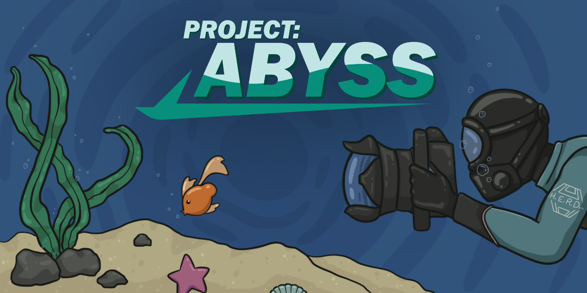

Portfolio
If you would like to see further details on any code snippets for these projects, please contact me and I'd be happy to provide them!
The Last Mile
Date Made: Jan-April 2025
Team of 8 - My Role: Lead Designer & Project Manager / Programmer
This game came from me and my team participating in the Road Trip Game Jam on itch.io. I had originally created a post with a game idea, and was requesting teammates to work with
The team started with just 5 people, but eventually crew to 8 as more talented people messaged me!
Our team consists of the following:
Programmer/Lead Designer - Me
2 Programmers - Shadow/Nath
1 Prop/Environment Artist - Scorcher
1 Character Artist - Cuuras
1 Writer - Seb
1 Sound Designer/Composer - Hozach
1 VA - Prima
Please see the link below to see the dedicated page on my website for our submission, including the itch.io page.
Sea Sorting
Date Made: April 2024
Solo Project with Aaron McAfee
This was a solo project that I set out to do upon graduating. My goal was to make a small Unity game within a week to post on my itch.io.
The project was a success! The programming only took a few days, and the art took a few more.
Me and Aaron had a blast finishing this cute project, and plan to add a few more small things to the game.
Gameplay Showcase
Untitled Project
Date Made: April 2024 - TBD
Company: Terracotta Games
This project is currently in development, and I can't disclose any information about it yet.
Please check back later for more information!
Project: Abyss
Date Made: September 2023 - April 2024
Class: Capstone I & II

Project: Abyss was a student project in development for 8 months, and has been finished and showcased at Level Up in Toronto.
If you would like to download the game, please click this itch.io link! Project: Abyss Download Page
Power Rush
Date Made: December 2023
Solo Prototype Project for a Game Jam
My program often held game jams, and this was my submission for for the one in December 2023. The theme was "Running out of power". The game was made using Unity.
I decided to make a timed shooter where you need to turn on generators to keep the lights on, before the time runs out.
See a video of the prototype in action below!
Grim Harvest - Mini Capstone
Date Made: January 2023 - April 2023
Class: High Level Development 2
Grim Harvest is a 3D top-down vampire survivors-esque roguelike made by a team of 5 students.
The game was in a prototype stage, so animations & art assets weren't completely implemented.
I was the main gameplay programmer and implemented most of the UI in the game.
Documentation
A very crucial part of this class was keeping proper documentation of all development, including
progress on a Trello page for our team. We were tasked to make 4 documentation pages for each programmer.
Here is an example of the Player Module that I made.
UML Diagrams
Another crucial part of this class was making UML diagrams for our game. We were tasked to make 4 UML diagrams for each programmer.
Below is an example of the UML diagram I made for the player module, including an overarching view of every diagram and how they connect.

Project Organization
We used Trello to keep track of weekly sprint tasks, and our team members work. Our professor also looked at these bi weekly to make sure
we were on track and established a good workflow. Here is a snippet of our Trello board. I'm the blue "AM".
What I Learned
Modular Design
One of the main systems that I worked on was the player ability system. At first, my idea was to make a modular
ability system that has one ability parent class, with multiple child abilities depending on what needed to be made.
However, this proved some complications because one of our weapons used projectiles, while the other 2 used slashes.
Custom 3D Game Engine Using Open GL
Date Made: January 2023 - April 2023
Class: Game & Graphics 3
This class was a continuation of Game & Graphics 2, where we made a custom 3D game engine using OpenGL.
We were tasked to make a 3D game engine with a custom renderer and physics engine.
The first part of the final assignment was to create a island with varying terrain heights, and a water plane.
Here is an example of terraforming, with lowering the ground, and raising the ground.
Terraforming
Dynamic Lighting
We were also tasked to implement dynamic lighting into our game engine.
This was done in GLSL shaders, and we were tasked to implement a simple point light that interacts with the terrain and player.
The player was given the ability to place down up to 8 torches, and the closest 6 torches to the player would be used for lighting.
As seen in the video to the right, the torches are always placed at the height of the terrain. This was accomplished by
getting the height of the terrain at the location in front of the player. We used math to loop through every vertice in the terrain,
and return the height for the torch to be placed at.
These were the main features that I implemented into the game engine, however there is much more going on behind the scenes,
so if you wish to discuss it, please contact me at the avenues below!
Custom 2D Game Engine Using OpenGL
Date Made: September 2022 - December 2022
Class: Game & Graphics 2

Game and Graphics 2 was our introduction to OpenGL and custom game engines in C++.
We started with a very basic template, and expanded on it weekly in classes and assignments.
The final assignment was to make a 2D game with custom collision, and rendering with OpenGL.
I decided to make a Vampire Survivors like game, with a focus on gaining new weapons the more you play.
Here's an example of the game in action.
If you look on the left, you can see the custom spritesheet animation we made for the player.
The player had 4 animations, and directly used the spritesheet file to animate the player.
The weapons that the player is firing can be seen on the right, with a basic fireball, and an explosion attack.
The explosion attack has a lingering hitbox that damages enemies that walk into it.
This lingering hitbox is also used effectively in the next example, where the player can throw an acid pool on the ground.
The collision in this game was done using a simple AABB collision system.
The player and enemies had a collision box, and the projectiles had a collision box.
The collision was done by checking if the player/enemy collision box was colliding with the projectile collision box.
If it was, the projectile would be destroyed, and the player/enemy would take damage.
I had a lot of fun with this project, and even though almost all of the collision & enemy stuff was
not in the assignments, I enjoyed making it. If you wish to discuss it further, please contact me at the avenues below!
Contact Me
If you're interested in working together or have any questions, contact me at these avenues!